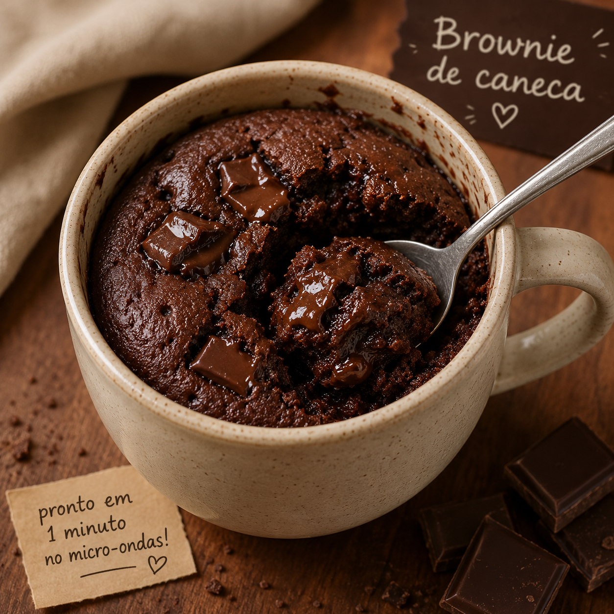
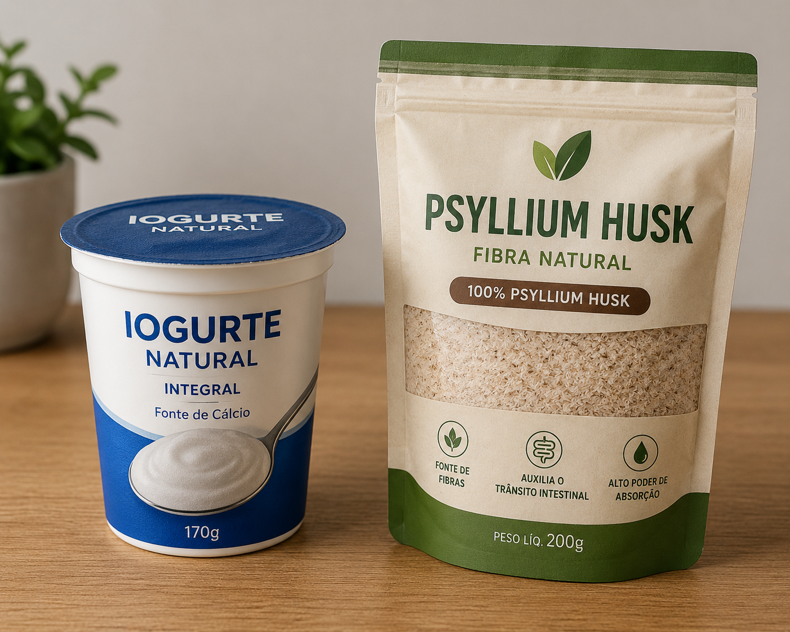
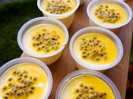

A receita mostrada nesse vídeo do YouTube é uma ótima opção para quem gosta de comida prática, saborosa e fácil de preparar. Mesmo sem precisar de ingredientes complicados, o preparo consegue unir muito sabor e uma textura deliciosa, perfeita para qualquer momento do dia. Durante o preparo, os ingredientes são misturados de maneira simples e rápida, sem exigir muita experiência na cozinha. O passo a passo é fácil de acompanhar, o que torna a receita ideal até para quem está começando a cozinhar. Além disso, o vídeo mostra dicas importantes para deixar tudo no ponto certo, ajudando a evitar erros e garantindo um resultado bonito e apetitoso. Outro ponto positivo é que essa receita combina ingredientes acessíveis e comuns do dia a dia, tornando o prato econômico e fácil de fazer em casa. O preparo também não leva muito tempo, sendo perfeito para quem quer uma refeição gostosa sem passar horas na cozinha. O que faz essa receita ser tão boa de comer é o equilíbrio de sabores e a textura bem preparada. O prato fica saboroso, com aquele gosto caseiro que agrada praticamente todo mundo. Além disso, pode ser servido tanto em refeições principais quanto em momentos especiais com a família e amigos. Receitas simples como essa fazem sucesso porque unem praticidade, economia e muito sabor. É o tipo de comida que conforta, mata a fome e ainda deixa vontade de repetir.
Uma Opção Fitness,Saudável e Natural. Ótima para quem quer Controle de Peso: Promove sensação de estômago cheio, ajudando a controlar o apetite quando consumido antes das refeições. e Controle Intestinal:Auxilia no funcionamento do intestino, melhorando a consistência das fezes tanto em casos de prisão de ventre quanto de diarreia. e ainda Controle metabólico: Ajuda a diminuir a absorção de gorduras e açúcares, contribuindo para a redução do colesterol ruim (LDL) e dos níveis de glicose.

